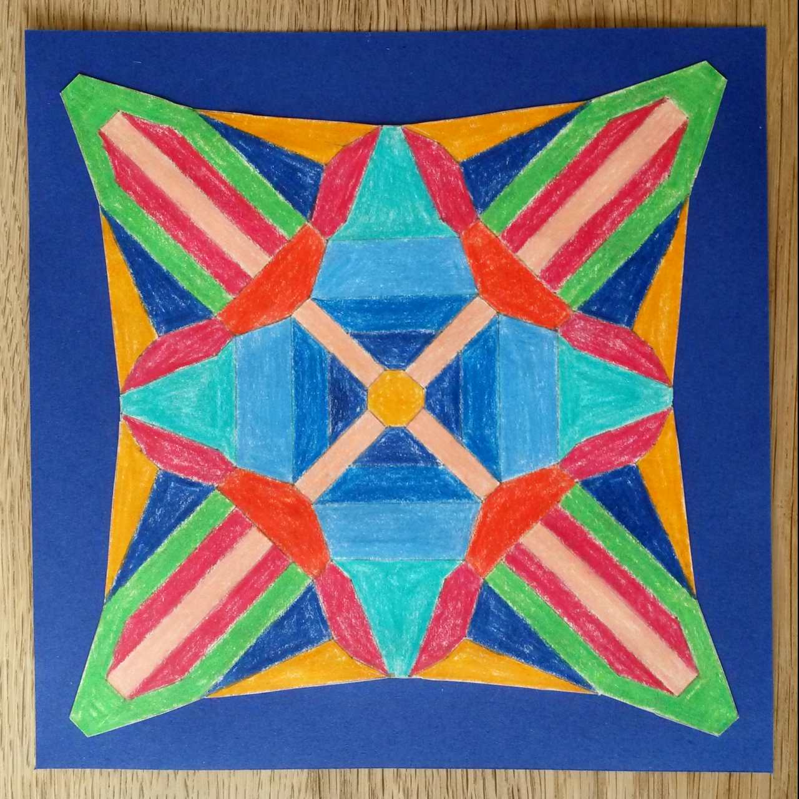

❁ MEIN MANDALA ❁
❁ MEIN MANDALA ❁
Mandalaprozess
Ein Farbresonanzmandala ist ein Muster, das über einen individuellen Prozess kreiert und gestaltet wird.
Der Prozess findet auf sechs festgelegten Prozessebenen statt. Im Workshop Mandalaprozess erfährst Du mehr
über die sechs Prozessebenen. Die sechs Prozessebenen fügen sich zusammen zum persönlichen Farbresonanzmandala.
Beim Gestalten und beim anschliessenden Betrachten bewirkt das Mandala eine Resonanz im menschlichen Körper.
Es wirken Worte, Symmetrie, Rhythmus, Punkte, Linien und Farben. Tiefgreifende Prozesse können ausgelöst werden.
Es empfiehlt sich, den Prozess in Begleitung auszuführen.
Weiterführendes
Hast Du den Workshop "Mandalaprozess" besucht? Für den privaten Gebrauch kannst Du kostenpflichtig eine PDF-Datei
mit der Matrix für ein Farbresonanzmandala bestellen. Mehr Infos zu Deiner Investition erhältst Du unter
info@meinmandala.ch.
Arbeit mit Klient:innen
Hast Du den Workshop "Mandalaprozess" besucht und bist Kunsttherapeutin PTM? Für die Arbeit mit Klient:innen
kannst Du kostenpflichtig PDF-Dateien
mit der Matrix für ein Farbresonanzmandala bestellen. Mehr Infos zu den Kosten pro PDF und pro Stunde
Begleitung meinerseits erhältst Du unter info@meinmandala.ch.
Gallerie
Möchtest Du, dass Dein Bild in der Gallerie erscheint? Dann schicke es gerne an
info@meinmandala.ch.

Info
- 08.06.2023: V02: MEIN MANDALA ist neu unverschlüsselt besuchbar. Die Matrizen werden nicht mehr im Browser generiert. Sie sind auf Bestellung erhältlich.
Ein Kontaktformular für die Bestellung ist geplant.
- 27.05.2023: V01a: Das Layout für die Verschlüsselung geändert. MEIN MANDALA befindet sich neu auf der Domain meinmandala.ch
- 18.05.2023: V01: Teilen von MEIN MANDALA V01 mit den ersten Anwender:innen. Herzlichen Dank für eure Mitarbeit.
- 18.05.2023: Die erste Browser-Version von MEIN MANDALA ist fertig!
- 30.03.2023: Entwicklung von MEIN MANDALA für Webbrowser, um die Anwendung ohne Installationen zu ermöglichen. Das funktioniert dank der Browser-Version von Python Py-Script und der Browser-Version von LaTeX TikZ TikZJax. Herzlichen Dank an die Entwickler.
- 26.12.2022: MEIN MANDALA erzeugt die erste Punkte-Grafiken als PDF-Datei, braucht dazu aber eine LaTeX-Installation.
- 17.12.2022: MEIN MANDALA erzeugt die erste Matrix als PDF-Datei, braucht dazu aber eine LaTeX-Installation.
- 12.12.2022: Beginn des Herzensprojekts MEIN MANDALA. Ich programmiere mit Python, LaTeX und TikZ. Herzlichen Dank an Jonas, der mich mit LaTeX und TikZ unterstützt.